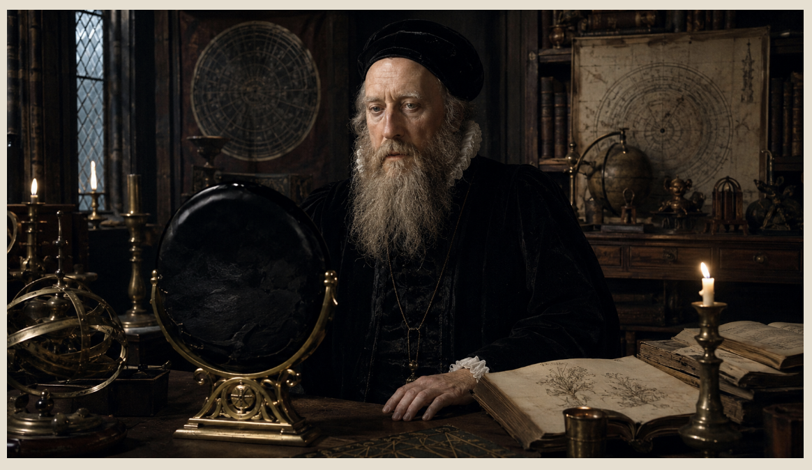

Obsidian is not merely a stone. It is fire arrested at the threshold of form. It is lava that never became crystal, flame that cooled too quickly to arrange itself into the ordinary geometry of minerals.
Born from volcanic eruption, obsidian is natural glass: a dark, vitreous substance formed when silica-rich magma cools so rapidly that crystals have no time to grow. In geological terms, it is a congealed liquid. In esoteric terms, it is frozen eruption, a memory of the underworld sealed into a mirror-black body.
This is why obsidian has always carried a strange authority. It belongs neither fully to stone nor glass, neither to earth nor fire, neither to weapon nor mirror. It cuts, reflects, conceals, reveals, protects, and wounds. It is an object of the threshold.
Obsidian does not flatter the eye. It interrogates it.
A Stone Born from Catastrophe
Unlike stones that slowly develop within the patience of the earth, obsidian emerges from violence, heat, rupture, and sudden cooling. It is volcanic intensity made silent. This gives obsidian its primary occult signature: the transformation of chaos into an instrument.
Where other stones symbolize harmony, growth, abundance, or celestial order, obsidian speaks of compression, ordeal, shadow, and precision. Some wisdom arrives not as light descending from above, but as black glass rising from below.

The Oldest Black Mirrors
Long before polished metal mirrors became common, human beings looked into dark reflective stone. In Neolithic Southwest Asia, obsidian was used as early as the eighth millennium BCE to create ornaments and mirrors. These mirrors were circular, slightly convex, highly reflective, and rare.
A mirror is never merely a tool. It is a metaphysical event. The moment a human looks into a reflective surface, the world splits. There is the body, and there is the image of the body. There is the face, and there is the double.
In clear water, the self trembles. In bronze, it gleams. But in obsidian, the self appears as if summoned from night. A silver mirror returns the surface. A black mirror seems to return the hidden architecture beneath the surface.

Tezcatlipoca: Lord of the Smoking Mirror
No civilization developed the esoteric symbolism of obsidian with greater force than Mesoamerica. Among the Aztec and Nahua peoples, obsidian was connected to power, sacrifice, medicine, divination, warfare, and the gods. It was the material of blades and mirrors, of blood and vision.
The deity most closely associated with this mystery was Tezcatlipoca, whose name is commonly rendered as “Smoking Mirror.” His emblem was neither throne, sword, crown, nor star, but a mirror that sees while smoke conceals.
Through an esoteric lens, this is the power of obsidian: it does not reveal by adding light. It reveals by intensifying darkness until the eye becomes conscious of itself.

John Dee and the Mirror in Renaissance Europe
One of the most fascinating episodes in the history of obsidian concerns Dr. John Dee, the Elizabethan mathematician, astrologer, alchemist, imperial theorist, and occult philosopher. Dee was one of the great liminal figures of the Renaissance: part scholar, part magician, part political visionary, part angelic experimenter.
The British Museum holds an obsidian mirror associated with Dee. Scientific analysis indicated that the obsidian was plausibly from Pachuca, Mexico, placing it within the world of Aztec-controlled sources before such objects entered European collections.
Imagine the journey: a mirror born from Mexican volcanic glass, shaped within a Mesoamerican sacred-symbolic world, transported through conquest and commerce, and eventually entering the orbit of one of Europe's most famous occult philosophers. The mirror becomes a historical sigil of transmission.

The Architecture of Perception
The deepest mystery of obsidian is not that it reflects the world. It is that it changes the way reflection itself is understood. A normal mirror tells us, “Here is what you look like.” An obsidian mirror asks, “Who is the one looking?”
When a person gazes into black reflective glass, the image is dim. The surface does not immediately surrender clarity. The eye must adjust. Imagination begins to participate. The boundary between reflection, memory, intuition, and projection becomes unstable.
The mirror does not contain visions like a picture frame. It creates a threshold condition in consciousness, weakening the tyranny of ordinary sight so symbolic perception may rise from beneath literal perception. Obsidian is not a window into fantasy. It is a technology of ambiguity.
Darkness does not obscure. It refines.
The Blade and the Mirror
Obsidian's two great historical forms are the blade and the mirror. The blade cuts outward. The mirror cuts inward. The blade opens flesh. The mirror opens perception. The blade separates body from body. The mirror separates the self from its mask.
This is the secret of obsidian: it is a stone of incision. Sometimes the incision is physical, as in the ancient tool or ritual blade. Sometimes it is psychic, as in the black mirror that cuts through illusion. Sometimes it is spiritual, as in the moment a person sees their own shadow clearly enough to stop being ruled by it.

The Stone That Looks Back
Obsidian is the black witness of the earth. It is what happens when fire becomes still enough to reflect. It is the underworld learning to see.
It is not a stone of easy answers. It is a stone of dangerous clarity. Darkness is not always the absence of vision. Sometimes darkness is the medium through which deeper vision becomes possible.
Obsidian does not simply reflect the face. It reflects the hidden force behind the face. For those willing to look without turning away, the stone becomes what it has always been: a frozen flame, a blade of night, a smoking mirror, and one of the oldest instruments by which humanity learned that seeing is not merely an act of the eyes, but an initiation of the soul.
End of the essay
Continue into the Living Archive